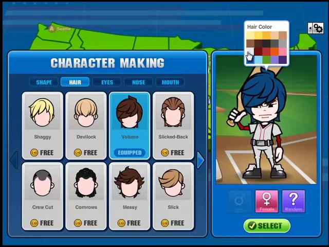

Cabello y creador · 0.9.9
La nueva captura permite corregir la caída del pelo y su relación con la frente, las sienes y las gafas. Se mantiene la cabeza del bateador 0.8.6 elegida por el usuario.
Abrir el juego · Notas y comprobaciones · Sprite nuevo · Prompt y procedencia
El flequillo cae sobre el rostro
La referencia muestra un volumen redondo y un flequillo que cubre la frente y parte de un ojo. Se reconstruyó Volume como un sprite separado, con laterales más largos y una caída más profunda. Las gafas ahora se dibujan detrás del pelo; los cascos siguen por delante.
Tu captura del juego original
0.9.9 · creador real, peinado Volume azul
Caída y ajuste en las ocho cabezas
Shaggy, Devilock, Messy y Slick conservan sus ilustraciones y ajustan la profundidad del flequillo. Las raíces siguen el ancho de sienes de cada cabeza. Crew Cut, Cornrows y Slicked-Back conservan la frente descubierta. Solo Volume tiene un sprite nuevo.
0.9.8 · 64 combinaciones, rubio 0.9.9 · mismas combinaciones y color
0.9.9 · mismas combinaciones y color
Selección y continuidad del personaje
La paleta de color se coloca sobre el personaje, Random pasa debajo de la vista previa, los recuadros tienen fondo gris y EQUIPPED aparece en una insignia azul. BACK descarta el borrador; SELECT lo guarda. El peinado elegido se conserva en HOME y después de recargar.
0.9.9 · borrador, todavía sin guardar 0.9.9 · mismo personaje en HOME después del primer partido
0.9.9 · mismo personaje en HOME después del primer partido
Comprobaciones
| Prueba | Resultado local en Chrome |
|---|
| Cabello y cabeza | 64 combinaciones, frente/giro, rubio/blanco/oscuro, sprite no vacío y flequillo sobre el párpado izquierdo. |
| Creación | Registro sin código; nivel 1, ROOKIE; borrador, BACK, SELECT, recarga, primer partido y recuperación de carrera al iniciar sesión. |
| Rendimiento | 60.0 FPS en 45.1 s, P95 25 ms, cuadro más largo 51 ms. |
La medición es una muestra local, no una garantía para todas las computadoras. Las galerías usan datos preparados; las pantallas de carrera son capturas reales de la prueba.
Otros detalles visibles por completar: selector de género con sus gráficos y poses, más colores como los de la paleta original y animaciones ilustradas con más cuadros. No se muestran botones de funciones que aún no existen.
Volume es una reconstrucción ilustrada mediante el generador integrado, no un recurso original recuperado. La cabeza del bateador 0.8.6 y su atlas no se modificaron. La prueba física con un amigo sigue pendiente.